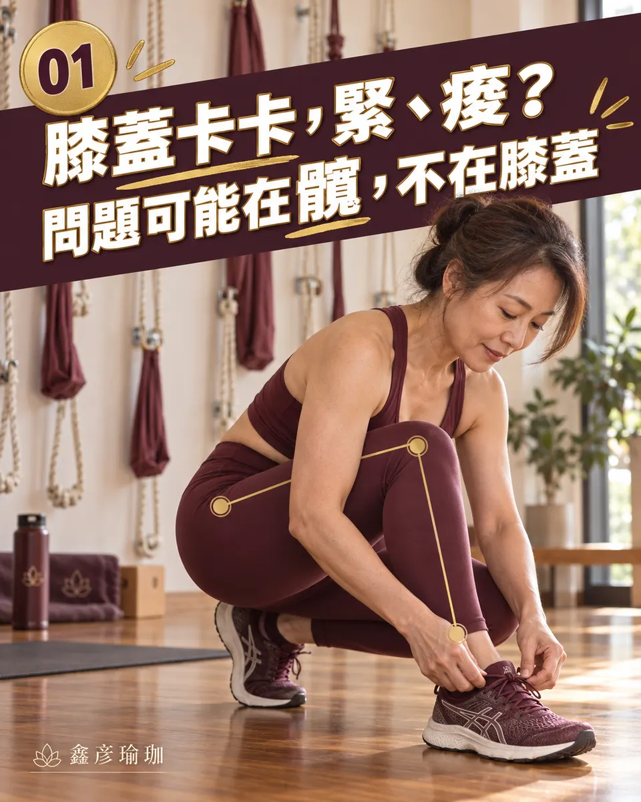
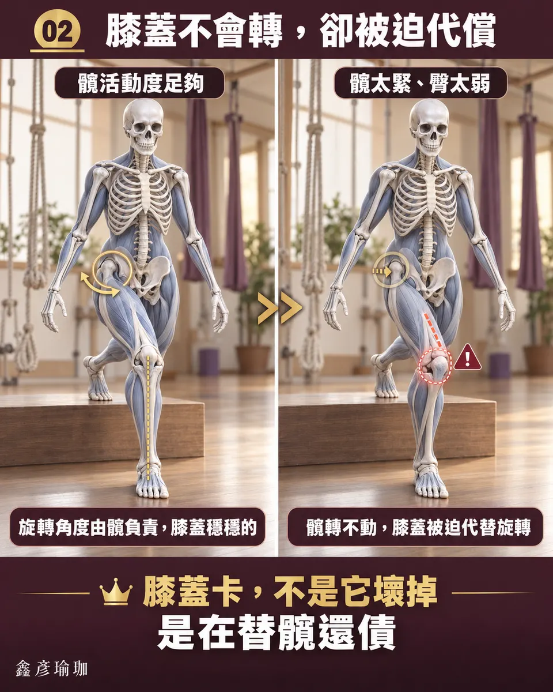
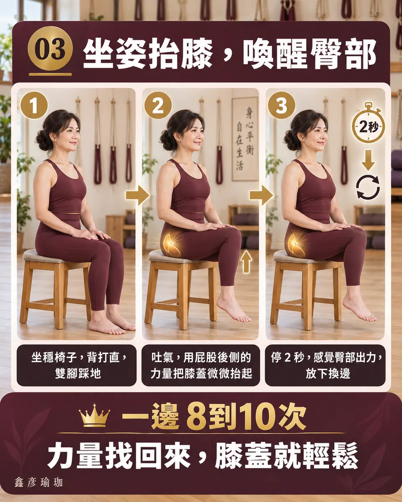

膝蓋卡卡不一定在膝蓋？先看懂髖關節活動度與下肢代償的關係

下公寓樓梯時，明明只剩兩階，腳才伸出去，膝前又有點卡。你把菜袋換到另一手，空出手抓欄杆，才敢慢慢踩下去。
下階時，髖、膝和踝一起承接重心。若支撐側髖控制或踝前移的方式改變，膝蓋路徑也可能跟著變。扶穩欄杆，從最低一階放慢約 2 秒，只觀察腳落地前膝蓋的走向。膝內移或卡聲本身無法確定是哪個關節造成不適。
下樓膝蓋卡卡，為什麼也要看髖和腳踝？
教室觀察。教室會放慢下踩，觀察骨盆是否轉向、膝蓋是否改道，以及扶穩之後有沒有不同。
一般運動衛教。下階路徑受階高、負重與個人動作習慣影響。膝蓋內移既不能單獨判斷臀肌無力，也不能預測受傷。

怎麼觀察下樓時膝蓋往內跑？
👆 手機可左右滑動
| 看到的狀況 | 可以怎麼觀察 | 無法據此判定 |
|---|---|---|
| 腳落地前膝往內 | 在低階扶穩，留意骨盆和膝是否一起轉向。 | 韌帶問題或臀肌失能 |
| 腳跟早早抬起 | 留意階高和踩下幅度，先縮小落差。 | 腳踝角度不足的診斷 |
| 卡住、有痛或無力 | 停止自測，依症狀尋求醫療評估。 | 哪一個關節或組織受傷 |
下階時，膝蓋在腳落地前走哪條路？
影片文字摘錄（畫面）
前方鏡頭拍攝從低台下步，並用圖示提醒觀看落地前膝蓋是否往內移。畫面呈現兩種動作路徑，無法量出膝關節負荷。
若動作引起明顯疼痛、麻木或突然無力，先停止練習。症狀持續或加劇時，請尋求醫療評估。

延伸理解：久坐讓屁股「失憶」了嗎？先看懂臀肌鈍化與骨盆支撐的真實機制
常見問題
蹲下或上下樓梯時膝蓋常有卡卡聲，代表膝蓋壞掉了嗎？
只有聲音無法判斷磨損；若有疼痛、腫脹或卡住，應由醫療專業評估。
為什麼說膝蓋的不適，常跟上方的髖關節有關？
髖、膝與踝同時參與負重動作，一起觀察可了解動作路徑。
臀肌無力為什麼會讓膝蓋更容易受壓？
髖部出力可能影響膝的路徑，但目視畫面不能測出肌力。
壁繩瑜伽如何協助減輕膝關節的負擔？
繩帶可作為支點，讓練習者降低幅度或改變負重方式。
在家做坐姿抬膝練習時，有哪些安全細節？
坐在穩固的椅面上，只抬到能自然呼吸且舒服的高度。
想把剛才的觀察整理成下一步？開始免費體態訊號掃描，從最困擾的日常動作填起。